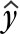

What affects the accuracy of a prediction?
The predicted response at X is
 = b0 + b1 x
and has a normal distribution with mean
μy = β0 + β1x
Its standard deviation depends on the value x at which the prediction
is being made. The further x is from
its mean in the training data,  ,
the greater the variability in the prediction.
,
the greater the variability in the prediction.
Simulation
The effect of the x-value on the variability of the predicted response can be shown using least squares lines fitted to simulated data:

The diagram below shows two theoretical distributions from the above model. (The spread would be even greater for predicting at x = 10.)